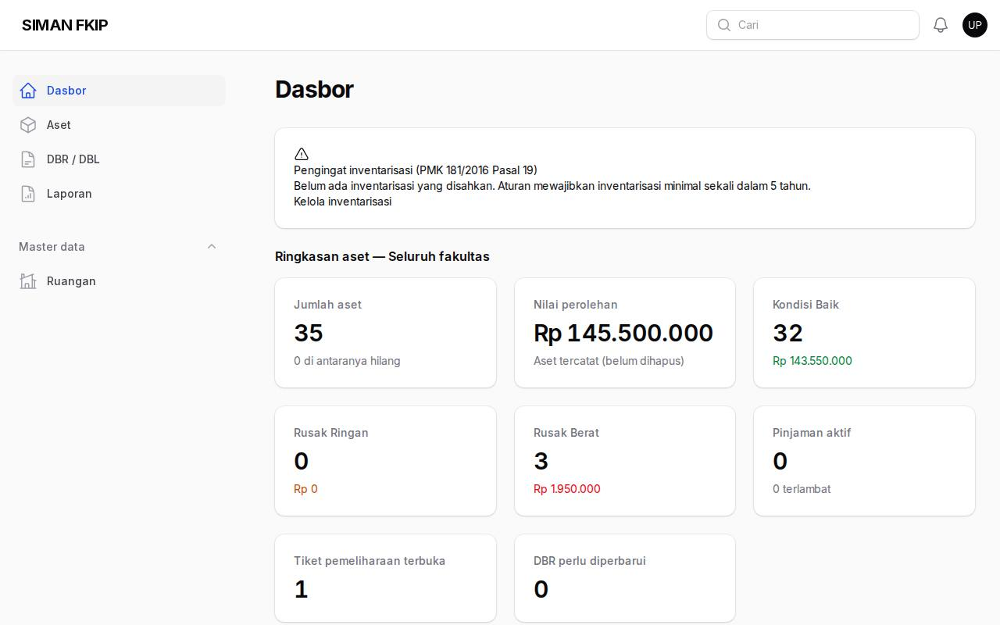
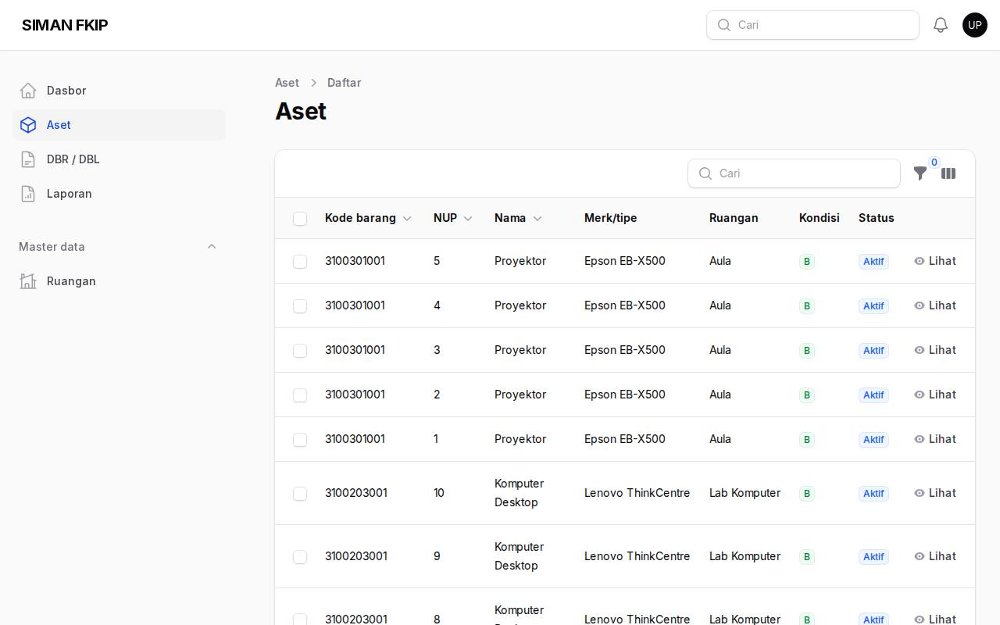
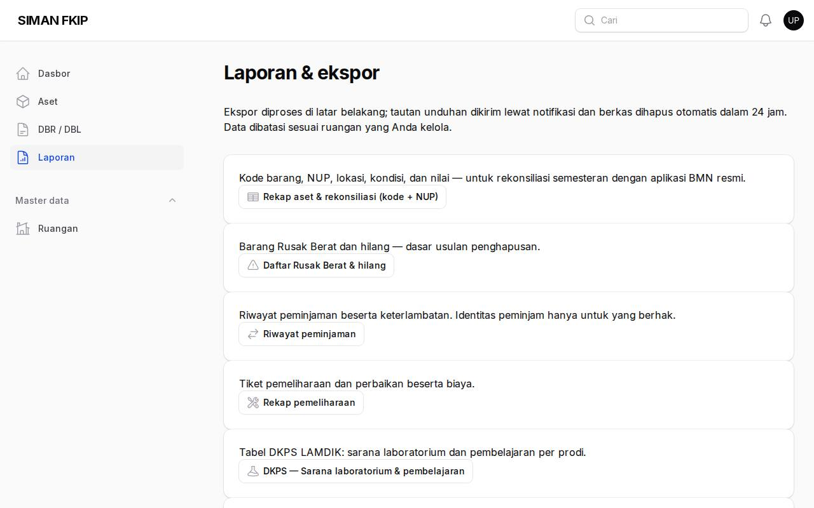

1. Dasbor
Dasbor menampilkan jumlah dan nilai aset seluruh fakultas, kondisi (B/RR/RB), pinjaman, tiket, dan DBR. Peran pimpinan bersifat baca-saja.

2. Aset
Menu Aset memuat daftar barang beserta kondisi dan lokasinya (tanpa aksi ubah).

3. Laporan dan DKPS
Menu Laporan: unduh rekonsiliasi, daftar RB & hilang, rekap pemeliharaan, dan tabel DKPS LAMDIK (sarana lab & pembelajaran, prasarana, TIK per prodi). Kolom data pribadi (nama/kontak peminjam & pelapor) disamarkan untuk pimpinan.
